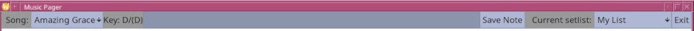
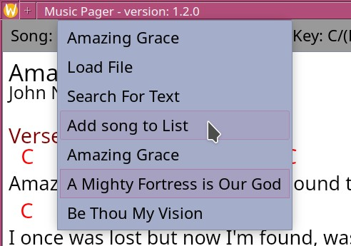
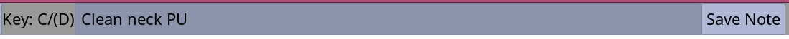
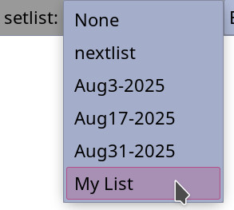

Previous Page || Main Page || Next Page
 The top bar is visible all the time. It shows and can select the current song. It allows notes about the song to be shown and edited. It allows the selection of a set list. Finally, it has an exit button.The song selector and display drop down.
The Song information area.
The set list display and selection area. This drop down normally displays the current set list name.
When selected, it shows all the set lists available. Clicking on one will load that list.
The exit button exits the application. If the current song has been edited but not saved, a dialog will open to remind the user there have been changes and can save before quitting.It is worth noting that if a song does not have a {key: } tag and the key was guessed, then the file has been changed and needs to be saved to keep the key information.
Previous Page || Main Page || Next Page